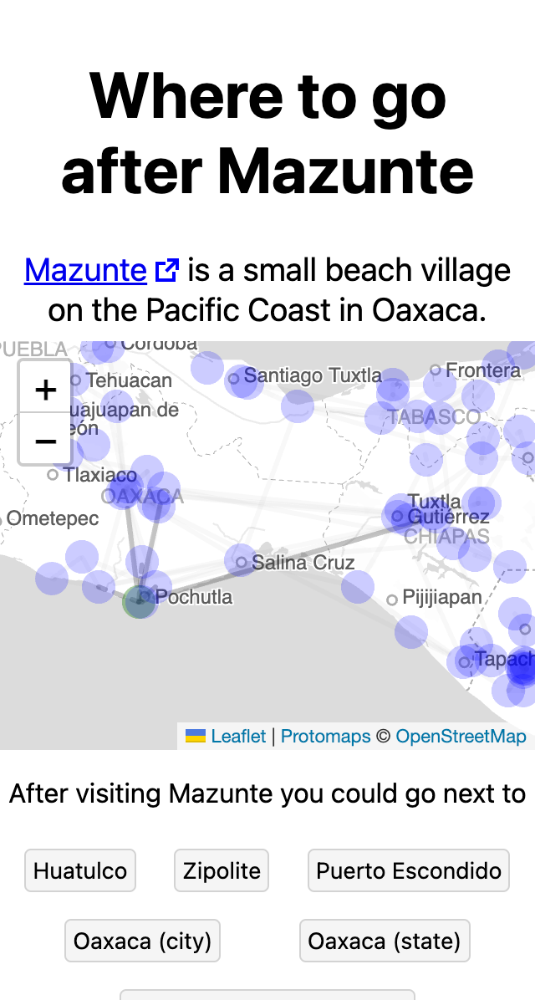
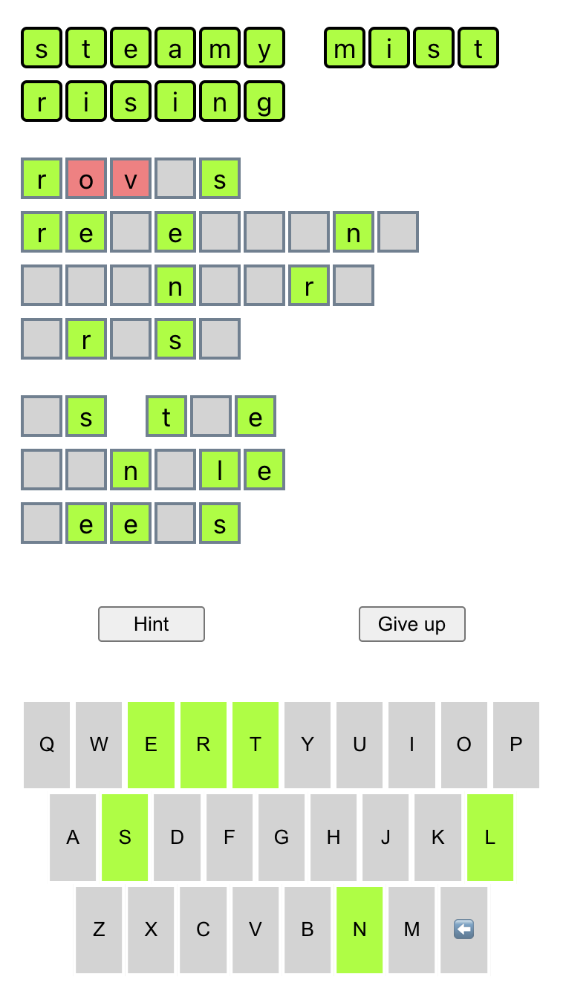

Will Ginsberg | My projects
- will.j.ginsberg@gmail.com
- github.com/wginsberg
cancelledornot.net
A website where users can vote on which celebrities should be cancelled.
whereugo.ing
A simple map for travellers which visualizes data from wikivoyage.org to help find new places to visit. Uses Leaflet and Protomaps to display the interactive map in browser.

Github repo
Github repo
Guitar Tab Archiver
A browser extension that scrapes guitar tabs while you browse ultimate-guitar.com and persists them locally with IndexedDB.
Haikudle
A daily word puzzle game inspired by Wordle. Updated daily using Github Actions.
